산업안전기사 (2004-03-07 기출문제)
1과목: 안전관리론
1. 어느 사업장에서 당해년도에 660명의 재해자가 발생하였다. 하인리히(Heinrich)의 1:29:300의 법칙에 의한 경상해는 몇 명인가?
- 53명
- 58명
- 600명
- 602명
(정답률: 81%)

2. 조건반사설에 의한 학습이론의 원리가 아닌 것은?
- 준비성의 원리
- 일관성의 원리
- 계속성의 원리
- 강도의 원리
(정답률: 49%)
3. 리더십의 특성 조건에 속하지 않는 것은?
- 기계적 성숙
- 혁신적 능력
- 표현능력
- 대인적 숙련
(정답률: 73%)
4. 1000인이 일하고 있는 사업장에서 1주 48시간씩 52주를 일하고, 1년간에 80건의 재해가 발생했다고 한다. 질병 등 다른 이유에 의해서 근로자는 총 노동시간의 3%를 결근했다. 이 때 재해 도수율(Frequency Rate)은?
- 25.46
- 33.04
- 47.81
- 56.91
(정답률: 62%)
5. 연천인율 45인 사업장의 빈도율은 얼마인가?
- 18.75
- 21.26
- 25.43
- 31.52
(정답률: 64%)
6. 인간의 심리 중에는 안전수단이 생략되어 불안전 행위를 나타낸다. 다음 중 안전수단이 생략되는 경우가 아닌 것은?
- 의식과잉이 있을 때
- 작업규율이 엄할 때
- 주변의 영향이 있을 때
- 피로하거나 과로했을 때
(정답률: 80%)
7. 안전태도교육의 기본과정을 옳게 설명한 순서는?
- 들어본다 → 이해시킨다 → 시범을 보인다 → 평가한다
- 이해시킨다 → 들어본다 → 시범을 보인다 → 평가한다
- 시범을 보인다 → 이해시킨다 → 들어본다 → 평가한다
- 들어본다 → 시범을 보인다 → 이해시킨다 → 평가한다
(정답률: 53%)
8. "Near Accident"란 무엇을 의미 하는가?
- 사고가 일어난 인접지역
- 사고가 일어난 지점에 계속 사고가 발생하는 지역
- 사고가 일어나더라도 손실을 전혀 수반하지 않는 재해
- 사고의 연관성
(정답률: 56%)
9. 다음 안전관리 조직 중 스태프형의 장점이 아닌 것은?
- 안전 정보수집이 신속하다.
- 안전기술 축적이 용이하다.
- 안전기술 명령이 신속하다.
- 경영자의 자문 역할을 한다.
(정답률: 62%)
10. 작업동기와 직무수행과의 관계 및 수행과정에서 느끼는 직무 만족의 내용을 중심으로 하는 이론과 주창자와의 관계가 잘못되어 있는 것은?
- 브름의 기대이론
- 콜만의 일관성 이론
- 록크의 자아실현 이론
- 허즈버그의 동기, 위생 이론
(정답률: 38%)
11. 일 중심형으로 업적에 대한 관심은 높지만 인간관계에 무관심한 리더십의 타입은?
- 이상형
- 권력형
- 방임형
- 중도형
(정답률: 63%)
12. 생체리듬의 변화에 대한 설명 중 잘못된 것은?
- 야간에는 체중이 감소한다.
- 야간에는 말초운동 기능이 저하된다.
- 체온, 혈압, 맥박수는 주간에 상승하고 야간에 감소한다.
- 혈액의 수분과 염분량은 주간에 증가하고 야간에 감소한다.
(정답률: 75%)
13. 자동차가 교차점에서 신호대기를 하고 있을 때 전방의 신호가 파랗게 되고 나서 발차해야 하는데 좌우의 신호가 빨갛게 된 찰나에 발차하는 경우는 어떤 개념의 예에 해당 하는가?
- 장면 행동
- 주변적 동작
- 무의식 행동
- 억측 판단
(정답률: 61%)
14. 안전교육에 있어서 안전한 마음가짐을 갖도록 하는 가치관 형성 교육으로 이끌어야 하는 교육 단계에 해당하는 것은?
- 지식교육
- 기능교육
- 태도교육
- 추후지도
(정답률: 64%)
15. 문제해결훈련 브레인 스토밍(Brain Storming)기법의 수정 발언에 대한 설명으로 틀린 것은?
- "개발한 아이디어에 대해 좋다." "나쁘다." 라는 비판을 하지 않는다.
- 아이디어의 수는 많을수록 좋다.
- 다른 사람 의견을 정중히 반대한다.
- 자유자재로 변하는 아이디어를 개발한다.
(정답률: 78%)
16. 적응기제에 있어서 도피적 기제의 유형에 해당되지 않는 것은?
- 합리화
- 고립
- 퇴행
- 억압
(정답률: 72%)
17. 안전교육 진행 4단계 중에서 제일 마지막 단계는 무엇인가？
- 도입
- 적용
- 평가
- 제시
(정답률: 73%)
18. 안전교육방법 중 동기유발요인에 영향을 미치는 요소로서 거리가 먼 것은?
- 안정
- 참여
- 성과
- 회피
(정답률: 82%)
19. 안전교육 성과를 위한 그룹활동의 지도방법 중 미국의 크리가 주장한 소집단 활동으로서 1차 집단은?
- 직접 대면하는 옆 동료 근로자
- 안전 학술단체의 회원들
- 정부 안전 관련자
- 산업안전 협회 등 단체
(정답률: 75%)
20. 유기화합물용 방독마스크 정화통의 주성분으로 알맞은 것은?
- 소다라임
- 시클로헥산
- 산화금속
- 알카리제재
(정답률: 61%)
2과목: 인간공학 및 시스템안전공학
21. 결함수상의 다음 그림의 기호는?
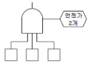
- 우선적 AND게이트
- 조합 AND게이트
- AND게이트
- 배타적 AND게이트
(정답률: 53%)
22. 운전 또는 워드작업과 같이 인체의 각 부분이 서로 조화를 이루며 움직이는 자세에서의 인체치수를 측정하는 것에 해당하는 것은?
- 구조적 치수
- 정적치수
- 외곽치수
- 기능적 치수
(정답률: 57%)
23. 체계 설계에서 인간공학의 가치와 관계가 가장 먼 것은?
- 인력 이용률의 향상
- 훈련 비용의 절감
- 체계제작비의 절감
- 사고 및 오용으로부터의 손실 감소
(정답률: 44%)
24. 인간공학의 연구를 위한 수집자료 중 자극에 대한 반응시간과 같은 것은 어느 유형으로 분류되는 자료라 할 수 있는가?
- 생리지수
- 주관적 자료
- 신체적 특성
- 성능 자료
(정답률: 26%)
25. 다음 중 FTA 방법의 특징이 아닌 것은?
- Bottom up형식
- Top Down 형식
- 특정사상에 대한 해석
- 논리기호를 사용한 해석
(정답률: 65%)
26. FMEA의 실시 순서 중 1단계인 대상 시스템의 분석 내용과 관계가 없는 것은?
- 기본방침 결정
- 고장 형태의 예측과 설정
- 기능 block과 신뢰성 block의 작성
- 기기 시스템의 구성 및 기능의 전반적 파악
(정답률: 30%)
27. 시스템 안전분석에 이용되는 전형적인 정성적, 귀납적 분석방법으로서, 서식이 간단하고 비교적 적은노력으로 특별한 훈련없이 분석이 가능하다는 장점을 가지고 있는 기법은?
- CA(criticality analysis)
- FMEA(failure modes and effects analysis)
- FTA(fault tree analysis)
- ETA(event tree analysis)
(정답률: 48%)
28. 다음 그림과 같은 FT(Fault Tree)도가 있을 때 G1의 발생확률은 얼마인가? (단, ①의 발생확률이 0.3, ②는 0.4,③은 0.3, ④는 0.5 이다.)
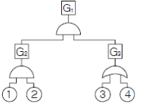
- 0.078
- 0.128
- 0.65
- 0.78
(정답률: 59%)
29. 오른쪽 그림의 결함수를 간략히 한 것은?
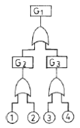
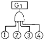
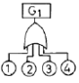
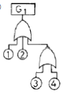
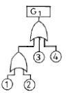
(정답률: 59%)
30. 다음 중 위험률(Risk)에 대하여 바르게 나타낸 식은?
- 사고의 크기 × 사고의 빈도
- 노동손실일수 × 총 노동시간
- 사고의 빈도 × 총 노동시간
- 사고의 크기 × 재해발생건수
(정답률: 50%)
31. 다음 어느 기계 시스템의 신뢰도를 구하려고 한다. 계산식이 올바른 것은?
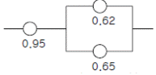
- 0.95 × {1 - (1 - 0.62)(1 - 0.65)}
- 0.95 × 0.62 × 0.65
- {(1 - 0.95) + (1 - 0.65) - 0.65}
- 0.95 × {(1 - 0.62)(1 - 0.65)}
(정답률: 77%)
32. 정지조정(static reaction)에서 문제가 되는 것은?
- 진전(tremor)
- 전도(overturn)
- 동요(agitation)
- 요통(Alame back)
(정답률: 34%)
33. 설계단계의 위험 및 운용성 검토에서 일반적으로 위험을 억제하기 위한 직접적 조치와 거리가 먼 것은?
- 공정의 변경(방법, 원료 등)
- 생산목표의 변경
- 공정조건의 변경(압력, 온도 등)
- 작업방법의 변경
(정답률: 61%)
34. 다음과 같은 실내 표면에서 반사율이 낮아야 하는 순서는?
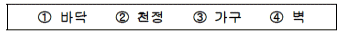
- ① - ③ - ④ - ②
- ① - ④ - ③ - ②
- ④ - ① - ② - ③
- ④ - ② - ① - ③
(정답률: 63%)
35. 인간의 식별기능에 영향을 주는 외적요인이 아닌 것은?
- 사람의 개인차
- 색채의 사용과 조명
- 물체와 배경간의 대조도
- 대소규격과 주요 세부사항에 대한 공간의 배분
(정답률: 58%)
36. 조사연구자가 특정한 연구를 수행하기 위해서는 어떤 상황에서 실시할 것인가를 선택하여야 한다. 즉, 실험실 환경에서도 가능하고 실제 현장 연구도 가능하다. 이중 현장 연구를 수행했을 경우 장점은?
- 비용절감
- 자료의 정확성
- 실험조건 조절 용이
- 현실적인 작업변수 설정가능
(정답률: 61%)
37. 작업표준의 작성시 검토할 사항이 아닌 것은?
- 동작의 순서를 바르게 한다.
- 동작의 수는 될 수 있는 대로 적게 한다.
- 작업대나 의자의 높이를 반드시 낮게 한다.
- 원자재 가공물 등을 움직일 때에는 되도록 중력을 이용한다.
(정답률: 67%)
38. 인간-기계 시스템 설계 시 인간공학적 설계의 일반적인 원칙에 해당되지 않는 것은?
- 인간의 특성을 고려한다.
- 작업특성에 적합하여야 한다.
- 시스템을 인간의 예상과 양립시킨다.
- 표시장치나 제어장치의 중요성, 사용빈도, 사용순서, 기능에 따라 배치하도록 한다.
(정답률: 27%)
39. 고음은 멀리 가지 못한다. 300m 이상의 장거리용 신호는 몇 Hz이하의 진동수를 사용하여야 하는가?
- 500Hz
- 1000Hz
- 3000Hz
- 5000Hz
(정답률: 56%)
40. 인체에는 23일 내지 28일 주기의 바이오리듬이 있는반면, 대뇌의 활동수준에도 1일 주기의 조석리듬이 존재한다. 다음 중 조석리듬 수준이 가장 낮아 재해사고의 가능성 이 가장 높은 시간대는?
- 오전 6시
- 오전 10시
- 오후 4시
- 오후 10시
(정답률: 41%)
3과목: 기계위험방지기술
41. 아크(arc)를 발생하는 고압용 기구는 목재 벽 또는 천정에서 몇(m) 이상 떨어져야 하는가?
- 3.0
- 2.0
- 1.0
- 0.5
(정답률: 45%)
42. 대형기계의 회전체가 있는 위험점으로부터 900mm 거리에 고정가드를 설치하고자 한다. 가드의 개구부에 최적간격은 얼마로 하여야 하는가?
- 141mm
- 106mm
- 96mm
- 91mm
(정답률: 29%)
43. 위험한 기계에는 구동 에너지를 피해자 자신이 작업위치에서 조작 차단할 수 있는 다음의 어느 것을 설치하여야 하는가?
- 방호설비
- 위험방지장치
- 동력차단장치
- 감속장치
(정답률: 62%)
44. 압력용기의 자체검사 중 해당사항이 아닌 것은?
- 압력방출 장치
- 주축의 베어링부
- 드레인 밸브
- 부속장치의 부식 및 균열
(정답률: 47%)
45. 와이어로프의 꼬임은 특수로프를 제외하고는 보통꼬임(Regular-Lay)과 랭꼬임(Lang-Lay)으로 나눈다. 보통꼬임의 특성이 아닌 것은?
- 로프자체의 변형이 적다.
- 킹크가 잘 생기지 않는다.
- 하중을 걸었을 때 저항성이 크다.
- 내마모성, 유연성, 내피로성이 우수하다.
(정답률: 46%)
46. 다음 중 방호울을 설치하여야 할 공작기계는?
- 선반
- 밀링
- 드릴
- 셰이퍼
(정답률: 42%)
47. 플레이너의 안전작업을 위한 절삭행정속도는 얼마인가? (단, 1분간의 테이블 왕복수 10회, 행정길이 2m, 귀환 행정 속도는 절삭행정속도의 2배)
- 20 m/min
- 20 m/sec
- 30 m/min
- 30 m/sec
(정답률: 30%)
48. 로봇의 매니퓰레이트와 안전방책과의 간격은 최소 얼마를 두어야 협착을 방지하는가?
- 40cm
- 30cm
- 20cm
- 10cm
(정답률: 33%)
49. 고속회전체로서 회전시험을 하기 전에 미리 결함유무를 확인할 수 있는 비파괴검사를 실시하도록 의무화되어 있는 경우는?
- 중량1톤 초과, 원주속도 120m/sec 이상인 것
- 중량2톤 초과, 원주속도 100m/sec 이상인 것
- 중량5톤 초과, 원주속도 100m/sec 이상인 것
- 중량2톤 초과, 원주속도 120m/min 이상인 것
(정답률: 55%)
50. 보일러의 제어장치가 아닌 것은?
- 압력배출장치
- 압력제한스위치
- 언로드밸브
- 고저수위조절장치
(정답률: 67%)
51. 안전장치의 선정조건에 해당하는 것은?
- 인간과 기계와의 작업의 배분
- 인간과 기계와의 융합
- 위험을 예지, 방지하는 것
- 맨-머신 시스템(Man-Machine system)속에서 기계ㆍ기구의 배치 공간
(정답률: 69%)
52. PRESS 작업에서 손이 금형 안으로 들어가는 작업이다. 그림과 같이 용기의 가장자리를 잘라내는 작업명에 적합한 것은?
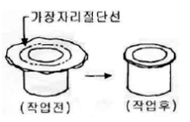
- 스웨징(Swazing)
- 업셋팅(upsetting)
- 트리밍(Trimming)
- 슬리팅(Slitting)
(정답률: 52%)
53. 리프트에 대해 올바르게 설명한 것은?
- 리프트는 승강로의 높이가 18m 이상인 것을 검사 대상으로 한다.
- 정격속도는 운반구에 최대하중을 싣고 상승할 때의 최고속도를 말한다.
- 건설용 리프트는 형식에 따라 와이어로프식과 웜기어식이 있다.
- 건설용 리프트는 용도에 따라 화물용과 인화공용이 있다.
(정답률: 32%)
54. 롤러기의 방호장치 중 로프식 급정지 장치의 설치거리는?
- 바닥에서 0.4 ∼ 0.6m 이하
- 바닥에서 1.1m 이하
- 바닥에서 0.8 ∼ 1.2m 이하
- 바닥에서 1.8m 이하
(정답률: 46%)
55. 어떤 봉이 인장력을 받아 세로변형율 ε 은 0.02가 되었다. 이 봉의 세로탄성계수가 2.1×106kg/cm2라면 가로변형률 ε' 는? (단, 재료의 푸아송 수는 3이다.)
- 0.0067
- 0.0047
- 0.0078
- 0.002
(정답률: 32%)
56. 공작기계에 의한 절삭가공시 일반적으로 칩(chip)의 형상이 가장 가늘고 날카로운 작업은?
- 선반 작업
- 밀링 작업
- 보링 작업
- 드릴링 작업
(정답률: 55%)
57. 반복응력을 받게 되는 기계구조부분의 설계에서 허용응력을 결정하기 위한 기초강도로 삼는 것은?
- 항복점(Yield point)
- 극한강도(Ultimate strength)
- 크리프강도(Creep limit)
- 피로한도(Fatigue limit)
(정답률: 52%)
58. 조작자의 신체부위가 위험한계 밖에 있도록 기계의 조작 장치를 위험구역에서 일정거리 이상 떨어지게 한 방호장치인 것은?
- 덮개형 방호장치
- 차단형 방호장치
- 위치제한형 방호장치
- 접근반응형 방호장치
(정답률: 63%)
59. 정전기의 발생에 관련되는 대전서열에 대한 설명 중 옳지 않은 것은?
- 대전서열상 두 물질이 서로 가깝게 있으면 정전기의 발생량이 적고 반대로 먼 위치에 있으면 정전기의 발생량이 많게 된다.
- 대전서열상 위에 있는 물질은 , 아래에 있는 물질 은 로 대전된다.
- 정전기의 대전서열은 부도체뿐만 아니라 도체에서도 성립된다.
- 각 물질의 대전서열은 고유한 것이므로 어떤 물질하고 접촉해도 그 극성은 언제나 일정하다.
(정답률: 50%)
60. 보일러의 안전한 가동을 위하여 압력방출 장치를 2개 설치한 경우에 올바른 작동 방법은?
- 최고 사용압력 이상에서 2개 동시작동
- 최고 사용압력 이하에서 2개 동시작동
- 최고 사용압력 이하에서 1개 작동 다른 것은 최고 사용압력 1.⑤배 이하 작동
- 최고 사용압력 이하에서 1개 작동 다른 것은 최고 사용압력 1.06배 이하 작동
(정답률: 67%)
4과목: 전기위험방지기술
61. 교류아크 용접기의 자동전격방지란 용접기의 2차전압을 25V 이하로 자동조절하여 작업자의 전격재해를 방지하는 것이다. 어떤 시점에서 그 기능을 발휘하는가?
- 아크를 발생시킬 때만
- 용접 작업 전체시간 동안
- 용접작업을 진행하고 있는 동안만
- 용접작업중단 직후부터 다음 아크 발생시까지
(정답률: 65%)
62. 반도체 취급시에 정전기로 인한 재해 방지 대책으로써 옳지 않은 방법은?
- 송풍형 제전기 설치
- 부도체의 접지 실시
- 작업자의 대전방지 작업복 착용
- 작업대에 정전기 매트 사용
(정답률: 53%)
63. 폭발한계에 도달한 메탄가스가 공기에 혼합되었을 경우 착화한계전압(V)은? (단, 메탄의 착화최소에너지는 0.2mJ, 극간 용량은 10㎌ 이라 가정한다.)
- 6325
- 5225
- 4135
- 3035
(정답률: 44%)
64. 인화성 물질을 함유하는 도료 및 접착제등을 도포하는 설비 또는 인화성 및 폭발성 분진을 취급하는 설비에 접지를 하는데 이 접지의 주 목적은?
- 벼락시 뇌해를 방지하기 위함
- 정전기의 발생을 방지하기 위함
- 화재 및 폭발을 방지하기 위함
- 감전을 방지하기 위한 것이 주목적임
(정답률: 43%)
65. 대지전압(접지전로에 있어서는 대지와의 사이의 전압, 비접지식 전로에 있어서는 전선간의 전압)이 150[V] 이하인 경우의 전로의 절연저항값은 최소 몇[MΩ] 이상이어야 하는가?
- 0.1
- 0.2
- 0.3
- 0.4
(정답률: 52%)
66. 전기작업에서 안전을 위한 일반 사항이 아닌 것은?
- 단로기의 개폐는 차단기의 차단 여부를 확인한 후에 한다.
- 전로의 충전여부 시험은 검전기를 사용한다.
- 전선을 연결할 때 전원쪽을 먼저 하고 연결해 간다.
- 첨가전화선에는 사전에 접지 후 작업을 하며 끝난 후 반드시 제거해야 한다.
(정답률: 71%)
67. 백금과 동을 접촉시킨 경우 접촉전위차[V]및 접촉면의 전하밀도[C/cm2 ]를 구하면? (단, 백금 및 동의 일함수(work function)을 각각 5.44 및 4.29[eV]라 한다. 또 접촉계면의 두께를 5×10-10[m] 유전율은 진공의 유전율 8.855×10-12[F/m])과 같다고 한다)
- 0.95, 1×10-2
- 1.15, 2×10-2
- 0.95, 2×10-2
- 1.15, 1×10-2
(정답률: 36%)
68. 전기용품기술기준에 관한 규칙에서 정하고 있는 감전보호용 누전차단기는 정격감도전류 동작시간은 얼마 이하로 되어 있는가?
- 5mA 이하, 0.1초 이내
- 30mA 이하, 0.03초 이내
- 15mA 이하, 0.03초 이내
- 30mA 이하, 0.1초 이내
(정답률: 62%)
69. 본질안전방폭구조(EX ia, ib)의 설명을 잘못 표현한 항목은?
- 온도계, 유량계, 압력계 등에 사용하며, 유지보수시 전원 차단을 하지 않아도 된다.
- 본질적으로 안전한 전류가 정상운전 상태에서 발생하며 단락, 차단하여도 점화에너지가 못된다.
- EX ib의 방폭구조는 2중 안전구조로써 유일하게 0종 장소에 적합하다.
- 에너지가 1.3[W] 30[V] 및 250[mA] 이하의 개소에 가능하다.
(정답률: 49%)
70. 감전사고의 예방대책이 아닌 것은?
- 전기설비의 점검을 철저히 할 것
- 설비의 필요한 부분에 보호접지 시설을 할 것
- 전기기기에 상표시를 할 것
- 노출충전부에 절연방호구를 사용할 것
(정답률: 62%)
71. 정전기가 대전된 물체를 제전시키려고 한다. 제전에 효과가 없는 것은?
- 접지
- 건조
- 가습
- 제전기
(정답률: 50%)
72. 좋은 조명의 조건으로 적합하지 않은 것은?
- 적당한 조명으로 기분을 좋게 할 것
- 광속발산도의 분포는 고르게 유지될 것
- 그림자가 생기지 않도록 하여야 한다.
- 미적효과가 좋고 경제적이며 보수가 용이할 것
(정답률: 45%)
73. 정격사용률 30%, 정격2차 전류 300A인 교류아크 용접기를 200A로 사용하는 경우의 허용사용률은?
- 67.5%
- 91.6%
- 110.3%
- 130.5%
(정답률: 53%)
74. 전기의 안전장구에 속하지 않는 것은?
- 활선장구
- 검출용구
- 접지용구
- 전선접속용구
(정답률: 48%)
75. 폭발성 가스의 발화도가 450℃를 초과하고, 설비의 허용 최대 표면온도가 320℃이상인 가스의 발화도 등급은?
- G1
- G2
- G3
- G4
(정답률: 46%)
76. 인화성물질을 사용하는 시설에는 방폭구조의 전기기기를 사용하여야 한다. 전기기기의 방폭구조의 선택은 인화성 물질의 무엇에 의해서 좌우되는가?(오류 신고가 접수된 문제입니다. 반드시 정답과 해설을 확인하시기 바랍니다.)
- 폭발한계, 폭발등급온도
- 발화도, 최소발화에너지
- 화염일주한계, 발화온도
- 인화점, 폭굉한계
(정답률: 52%)
77. 전기누전으로 인한 화재조사시에 착안해야 할 입증흔적과 관계없는 것은?
- 접지점
- 누전점
- 혼촉점
- 발화점
(정답률: 47%)
78. 인체가 전기설비에 접촉되어 감전재해가 발생하였을 때 감전피해의 위험도에 가장 큰 영향을 미치는 요인은?
- 통전전류의 크기
- 통전시간
- 통전경로
- 전원의 종류
(정답률: 64%)
79. 정전계 E내에서 점 B에 대한 A점의 전위를 결정하는 식은?
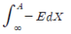
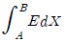
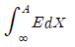
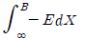
(정답률: 44%)
80. 부하에 400A의 전류가 흐르는 단상2선식의 한 전선에 서 허용되는 누전전류는 몇[A]인가?
- 0.2
- 0.1
- 0.4
- 0.5
(정답률: 58%)
5과목: 화학설비위험방지기술
81. 소방법의 위험물과 산업안전보건법의 위험물의 분류에서 양쪽에 공통으로 포함되지 않는 것은?
- 인화성 가스
- 인화성 액체
- 산화성 액체 및 산화성 고체
- 물반응성 물질 및 인화성 고체
(정답률: 33%)
82. 다음 관부속품 중 유로를 차단할 때 쓰일 수 있는 부속 품은?
- 유니온
- 소켓
- 플러그
- 엘보우
(정답률: 57%)
83. 소화효과에 대한 다음의 설명 중 맞지 않는 것은?
- 물에 의한 소화는 냉각효과이다.
- 불연성 가스에 의한 소화는 질식효과이다.
- 할로겐화 탄화수소를 사용하는 경우의 주요 소화효과는 산소의 공급 차단에 의한 질식효과이다.
- 소화분말을 사용하는 경우의 주요 소화효과는 연소의 억제, 냉각, 질식의 상승효과이다.
(정답률: 45%)
84. 반응폭발에 영향을 미치는 요인 중 영향이 적은 것은?
- 반응생성물의 조성
- 냉각시스템
- 반응온도
- 교반상태
(정답률: 37%)
85. 다음의 물질 중 고농도에서 질식을 일으키는 물질이 아닌 것은?
- 벤젠
- 시안화수소
- 황화수소
- 일산화탄소
(정답률: 38%)
86. 다음 위험물 중 산화성 액체 및 산화성 고체가 아닌 것은?
- 질산 및 그 염류
- 염소산 및 그 염류
- 과염소산 및 그 염류
- 유기금속화합물
(정답률: 52%)
87. 액화 프로판 320kg을 내용적 50L 용기에 충전할 때 필요한 소요 용기의 수는 약 몇 개인가?(단, 액화 프로판의 가스정수는 2.35 이다.)
- 15
- 17
- 19
- 21
(정답률: 45%)
88. 배관에 대한 설명 중 잘못된 것은?
- 배관계 전체의 기밀 시험압력은 통상 상용압력의 1.1배로 실시하여 새는 곳이 없어야 한다.
- 배관계에는 적당한 안전밸브나 안전판을 설치하여 이상압력을 대기로 방출되도록 하여야 한다.
- 발화성, 폭발성 유체를 수송하는 배관에는 반드시 정지 접지를 한다.
- 배관 속을 흐르는 유체의 종류에 따라 색체로 구별할 필요는 없다.
(정답률: 62%)
89. 유해성 물질의 물리적인 특성에서 입자의 크기가 가장 큰 것은?
- 미스트
- 흄
- 분진
- 스모그
(정답률: 39%)
90. 다음 연소이론 중 옳지 않은 것은?
- 착화온도가 낮을수록 연소위험이 크다.
- 인화점이 낮은 물질은 착화점도 낮다.
- 인화점이 낮을수록 연소위험도 크다.
- 연소범위가 넓을수록 연소위험이 크다.
(정답률: 56%)
91. 가스의 최대 연소속도를 결정하는 함수는?
- 공기 구멍에서 받아들인 공기량
- 화염 주위에서 확산에 의해 취하는 공기량
- 급격한 압력 상승
- 이론 공기량
(정답률: 23%)
92. 다음 중 파열판 설계에 사용되는 설계기준식을 바르게 표현한 것은 단 파열압력 ?(단,P: (kg/cm2), d:직경, σu:재료의인장강도(kg/mm2 ), t:두께(mm)이다.)
- P = 3.5σu × (t/d) × 100
- P = 3.5σu × (d/t) × 100
- P = 3.5σu × (t/d) × 1000
- P = 3.5σu × (d/t) × 1000
(정답률: 32%)
93. 원료를 연속적으로 반응기에 도입하는 동시에 반응 생성물을 연속적으로 반응기에서 배출시키면서 반응을 진행 시키도록 조작하는 연속반응기에 해당하는 것은?
- batch reactor
- plug flow reactor
- semi batch reactor
- stirred tank reactor
(정답률: 46%)
94. 고압가스장치 중 안전밸브의 설치 위치가 아닌 것은?
- 압축기 각 단의 토출측
- 저장탱크 상부
- 펌프의 흡입측
- 감압밸브 뒤 배관
(정답률: 36%)
95. 다음과 같이 각 인화성 물질의 LFL, UFL 값이 주어졌을 때 위험도가 가장 큰 물질은?
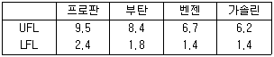
- 프로판
- 부탄
- 벤젠
- 가솔린
(정답률: 54%)
96. 평활한 금속판 상에 한 방울의 니트로글리세린을 떨어뜨려놓고 금속추로서 타격을 행할 때 니트로글리세린 중에 아주 작은 기포가 존재한 경우, 기포가 존재하지 않을 때 보다도 작은 충격에 의해 발화가 일어난다. 이 원인은 다음 중 어느 것인가?
- 단열압축
- 정전기발생
- 기포의 탈출
- 미분화현상
(정답률: 45%)
97. 인화성 혼합가스가 메탄(CH4) 80%, 에탄(C2H6) 10%, 부탄(n-C4H10 10%로 구성되어져 있다. 공기 중에서 이 3성분 혼합가스의 화학양론 조성을 구하면? (단, 각 단독가스의 화학양론 조성은 메탄 9.5%, 에탄 5.6%, 부탄 3.1%로 한다.)
- 4.5%
- 5.2%
- 6.1%
- 7.4%
(정답률: 38%)
98. 공정안전자료의 허용농도란에 우선적으로 기입해야 하는 것은?
- 분자식
- 중간 생성물
- 분진폭발 한계치
- 시간가중평균농도
(정답률: 43%)
99. 다음 화학물질 중 물에 잘 용해되는 것은?
- 아세톤
- 벤젠
- 톨루엔
- 휘발유
(정답률: 58%)
100. 폭발압력과 인화성가스의 농도와의 관계에 대해 설명한 것 중 옳은 것은?
- 인화성가스의 농도가 너무 희박하거나 진하여도 폭발압력은 높아진다.
- 폭발압력은 양론농도보다 약간 높은 농도에서 최대폭발압력이 된다.
- 최대폭발압력의 크기는 공기와의 혼합기체에서보다 산소의 농도가 큰 혼합기체에서 더 낮아진다.
- 인화성가스의 농도와 폭발압력은 반비례 관계이다.
(정답률: 49%)
6과목: 건설안전기술
101. 폭이 10cm, 높이 10cm, 길이 40cm인 콘크리트 공시체를 그림과 같이 휨시험에서 1,000kgf에 파괴되었다. 이때 콘크리트의 휨강도는?
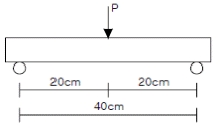
- 60kgf/cm2
- 70kgf/cm2
- 80kgf/cm2
- 90kgf/cm2
(정답률: 30%)
102. 건설업체를 대상으로 하는 환산재해율은?
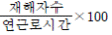
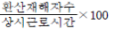
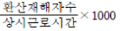
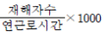
(정답률: 26%)
103. "산업안전기준에 관한 규칙"에 규정된 사항으로 철골 작업을 중지하여야 할 경우에 해당되지 않는 것은?
- 풍속이 초당 10m 이상인 경우
- 지진의 진도가 0.1 이상인 경우
- 강우량이 시간당 1mm 이상인 경우
- 강설량이 시간당 1cm 이상인 경우
(정답률: 58%)
104. 화물 하중을 직접 지지하는 경우 양중기의 와이어로프(Wire rope)에 대한 최대허용하중은?
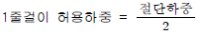
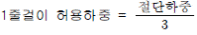
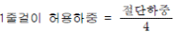
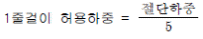
(정답률: 43%)
1⑤. 지반의 굴착작업시 굴착시기와 작업순서를 정하기 위하여 조사하여야 할 사항이 아닌 것은?
- 형상, 지질 및 지층의 상태
- 흙막이지보공의 설치여부
- 균열, 함수, 용수 및 동결의 유무
- 지반의 지하수위 상태
(정답률: 48%)
106. 화물을 차량계 하역 운반기계에 적재 또는 적하시 작업지휘자를 지정하도록 규정된 사항으로 올바른 것은?
- 단위화물의 중량이 100kg 이상일 때
- 단위화물의 중량이 150kg 이상일 때
- 단위화물의 중량이 200kg 이상일 때
- 단위화물의 중량이 250kg 이상일 때
(정답률: 44%)
107. 강관 틀비계를 조립할 때 유의사항이 아닌 것은?
- 비계기둥의 밑둥에는 밑받침철물을 사용하여야 하며 고저차가 있는 경우에도 틀비계는 항상 수평, 수직을 유지해야 한다.
- 높이가 20m를 넘을 때나 중량물을 적재할 경우 주틀의 간격이 1.8m이하로 한다.
- 주틀간 교차가새를 설치하고 최상층 및 10층 이내마다 수평재를 설치한다.
- 벽이음이나 연결재의 간격은 수직방향 6m 이하, 수평방향 8m 이하로 설치한다.
(정답률: 45%)
108. 레디믹스트 콘크리트의 비빔 시작부터 부어 넣기 종료까지의 외기 기온 25℃ 이상일 때 시간 한도와 1회 강도시험을 할 경우 주문강도가 옳게 짝지어진 것은?
- 1.5시간, 90% 이상
- 1.5시간, 85% 이상
- 2시간, 80% 이상
- 2시간, 85% 이상
(정답률: 33%)
109. 콘크리트 측압 산정시 그 영향을 고려하지 않아도 되는 요소는 ?
- 타설 높이
- 작업하중
- 타설 속도
- 철근량
(정답률: 32%)
110. 차량계 건설기계의 사용에 의한 위험의 방지를 위한 사항에 대한 설명으로 옳지 않은 것은?
- 암석의 낙하 등에 의한 위험이 예상될 때 차량용 건설기계인 불도저, 로더, 트랙터 등에 견고한 헤드가드를 갖추어야 한다.
- 차량계 건설기계로 작업시 전도 또는 전락 등에 의한 근로자의 위험을 방지하기 위한 노견의 붕괴방지, 지반침하방지 조치를 해야 한다.
- 차량계 건설기계의 붐, 암 등을 올리고 그 밑에서 수리ㆍ점검작업 등을 할 때 안전지주 또는 안전블록을 사용해야 한다.
- 항타기 및 항발기 사용시 버팀대만으로 상단부분을 안정시키는 때에는 2개 이상으로 하고 그 하단 부분을 고정시켜야 한다.
(정답률: 53%)
111. 지름이 10cm이고 높이가 20cm인 원기둥 콘크리트 공시체가 일축압축강도시험을 한 결과 30,000kgf에 파괴되었다. 이 때 콘크리트 압축강도는?
- 312kgf/cm2
- 353kgf/cm2
- 382kgf/cm2
- 412kgf/cm2
(정답률: 38%)
112. 그림과 같이 두 곳에 줄을 달아 중량물을 들 때, 매단줄의 각도(α)가 얼마일 때 힘 P의 크기가 최소인가?
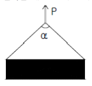
- 0°
- 60°
- 120°
- 각도와 상관없이 모두 같다.
(정답률: 37%)
113. 이동식비계의 바닥면적이 2.5m2인 경우 설계에 쓰이는 적재하중은 얼마인가?
- 150kgf
- 200kgf
- 250kgf
- 300kgf
(정답률: 45%)
114. 기계가 위치한 지면보다 낮은 장소를 굴착하는데 적합하고 비교적 굳은 지반의 토질에서도 사용 가능한 장비는?
- 백호(backhoe)
- 파워쇼벨(power shovel)
- 드래그라인(dragline)
- 크레인(crane)
(정답률: 54%)
115. 구조물 해체작업시 해체계획에 포함되지 않는 것은?
- 사업장내 연락방법
- 악천후시 작업계획
- 해체방법 및 해체순서 도면
- 가설설비, 방호설비, 환기설비 등의 방법
(정답률: 43%)
116. 다음 중 압쇄기를 사용하여 건물해체시의 순서가 가장 바르게 된 것은?
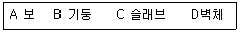
- A - B - C - D
- A - C - B - D
- C - A - D - B
- D - C - B - A
(정답률: 59%)
117. 다음 철골공사용 기계 설명 중 적합하지 않은 것은?
- 타워 크레인은 고층 작업이 가능하고 360° 작업이 가능하다.
- 크롤러 크레인은 트럭크레인 보다 흔들림이 적고 하물인양시 안정성이 크다.
- 진폴 데릭은 간단하게 설치할 수 있으며 경미한 건물의 철골 건립에 사용된다.
- 삼각데릭은 2본의 다리에 의해서 고정된 것으로 작업회전 반경은 약 270° 정도다.
(정답률: 27%)
118. 말뚝의 하중지지도로 옳은 것은?
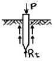
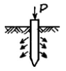
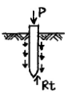
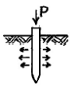
(정답률: 30%)
119. 가설자재의 안전율이 4 라면 400kgf의 허용하중을 받아야 할 자재의 파괴 하중은 얼마 이상이어야 하는가?
- 1600kgf
- 1000kgf
- 400kgf
- 100kgf
(정답률: 51%)
120. 산업안전보건관리비(안전관리비)는 항목별 사용기준을 안전관리비 총액의 일정 비율(%)이하로 규정하고 있다. 항목과 사용기준이 옳게 짝지어지지 않은 것은?(관련 규정 개정전 문제로 여기서는 기존 정답인 1번을 누르면 정답 처리됩니다. 자세한 내용은 해설을 참고하세요.)
- 본사 사용비 - 5% 이하
- 사업장의 안전진단비 등 - 30% 이하
- 안전보건교육비 및 행사비 등 - 30% 이하
- 안전시설비 등 - 50% 이하
(정답률: 36%)
660명의 재해자 중에서 경상해를 입은 사람의 수는 660 / (1 + 29) = 20명이다. 따라서, 경상해를 입은 사람의 수는 20명이다.